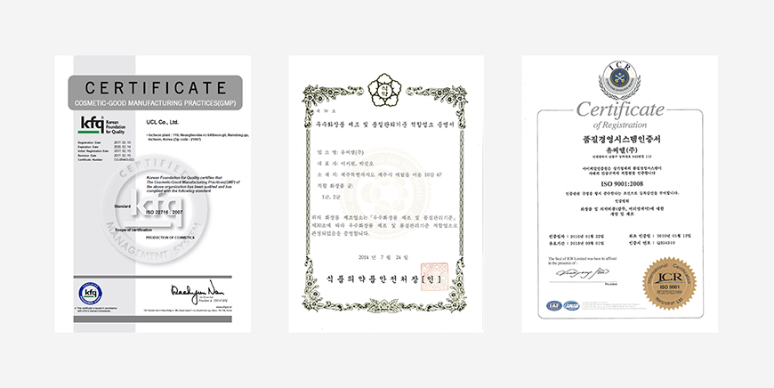
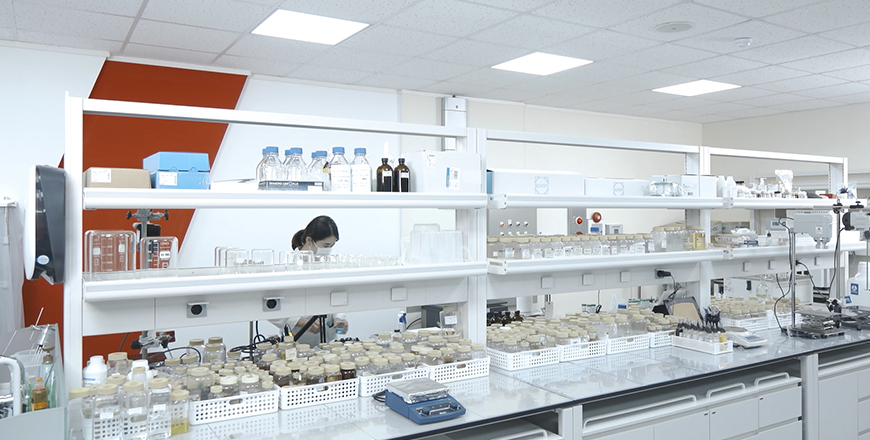

기획취재콘텐츠
- Home
- 제주라이프
- 기획취재콘텐츠
청정 제주와 함께 성장하는 화장품 브랜드 2부새로운 글

제주 화장품 산업의 기반을 만들다. 유씨엘
유씨엘은 1980년 화장품 원료 전문기업으로 시작한 대한민국 대표 화장품 OEM·ODM 기업이다. 1995년 인천 남동공단에 CGMP(Cosmetics Good Manufacturing Practices, 우수 화장품 제조 및 품질 관리 기준, 이하 CGMP) 공장을 완공하며 화장품 OEM·ODM 업계 1세대 주자로 사업을 확장했다.
유씨엘은 일찍부터 천혜의 자연환경과 다양한 생물 자원을 가진 제주도가 화장품 원료 산업의 최적지로 가치가 충분하다고 판단, 2011년 제주테크노파크 중앙연구소에 제주분소를 설립하며 제주에 진출했다. 2013년에는 제주시 애월읍 어음리에 공장을 설립하고 CGMP 인증을 받았으며, 연간 약 3000만 개 규모로 제품을 생산하고 있다. 제주도 내에서 민간 화장품 제조 업체가 CGMP 인증을 받은 곳은 유씨엘 제주 공장이 유일하다.
- 유씨엘 제주 생산 공장 전경 ⓒ유씨엘 -

- ISO 인증서(좌), CGMP 제주 인증서(가운데), 품질경영시스템 인증서(우) ⓒ유씨엘 -
유씨엘 제주 연구소는 천연·유기농 화장품과 비건 화장품 등 저자극 고기능 자연주의 제품 연구 및 개발에 특화된 곳으로 제주 에키네시아, 녹차, 알로에, 조릿대, 마유, 모자반, 감태, 미역 등 제주 육상식물과 바다 생물 자원을 활용한 천연 화장품 원료를 개발 및 생산하고 있다. 제주 현무암 분말 조성물, 에키네시아 추출물, 병풍 추출물과 동백오일 조성물 등 화장품 조성물 특허만 스무 개가 넘는다.
유씨엘은 제주에만 있는 소재(Only in Jeju)와 제주에서 자라서 더 효과가 강력한 소재(Better in Jeju)를 발굴해 다양한 화장품 제형으로 응용해 나가는 연구를 계속하고 있습니다. 제주의 소재만큼 관심을 얻고 있는 것이 제주의 스토리입니다. 화장품 브랜딩에서는 소비자의 감성을 사로잡을 스토리텔링이 중요합니다.’ 메이드인 제주’ 화장품이 가진 제주 자연의 독특한 스토리를 세계 시장에 선보이고 그 가치를 널리 알리는 것이 세계 시장에서 살아남기 위해 중요하다고 생각합니다.
유씨엘은 2007년 국내 최초로 M-ODM(Merchandising & ODM, 이하 M-ODM) 방식을 도입했다. M-ODM은 제품 기획 생산 방식인 ODM에 마케팅적 지원을 더한 새로운 형태의 개발 방식이다. 하나의 화장품 제품이 탄생하기까지, 유씨엘은 화장품 원료 발굴과 화장품 개발은 물론, 고유의 스토리를 발굴하고 화장품 콘셉트 기획과 마케팅까지 원스톱 솔루션을 제공한다. M-ODM 방식의 브랜드 개발은 상향 평준화 된 화장품 기술 시장에서 고도화된 기술력을 바탕으로 고객을 움직이는 ‘브랜딩’을 더해 화장품 제조업의 부가가치를 높이고 있다.

- 유씨엘 화장품 연구소 내부 ⓒ유씨엘 -
유씨엘에서 생산하는 제주화장품인증제도(JCC: Jeju Cosmetic Cert) 인증 화장품은 2020년 3월 기준 150여 개에 달한다. 제주 곡물과 동백오일 추출물로 개발한 LG생활건강 비욘드 피토모이스처 라인, 화산송이를 활용한 유니크미 발효 마스크, 제주 산방산 탄산 온천수와 제주 프레시 콤플렉스(레몬, 백년초, 동백꽃, 유채꿀)를 함유한 CJ올리브영 식물나라 제주 탄산수 클렌징 라인 등 유수의 화장품 브랜드와 협업을 통해 제주산 원료를 개발하고 이를 함유한 우수한 품질의 화장품을 생산 중이다.
- 제주 로즈마리와 비자 잎 추출물로 만든 헤어 빛 바디 제품 브랜드 ‘릴랙스인제주’ ⓒ유씨엘 -
제주 화장품 원료를 활용한 자체 화장품 브랜드 라인도 구축했다. 제주 자연주의 화장품 브랜드 ‘아꼬제’는 제주 흑무, 에키네시아. 해초 등 제주산 원료 추출물을 활용해 화이트닝, 안티에이징 등 7개 기초 및 기능성 화장품 라인을 선보였다. 제주의 풍부한 생물자원을 토대로 차별화된 스토리를 제품에 담아내며 제주 관광객과 국내 소비자는 물론, 베트남과 태국 등 해외에서도 좋은 반응을 얻고 있다. 또한, 제주 로즈마리와 비자 잎에서 에센셜 오일을 추출해 천연향을 개발, 헤어 및 바디 제품 브랜드 ‘릴랙스인제주’를 론칭, 홈 스파 트렌드에 발맞춰, 프리미엄 홈 스파 브랜드로 시장을 확대하고 있다.